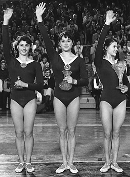

Rusudan Sikharulidze (USSR)
1974 World FX Bronze Medalist

Sikharulidze, Voronina and
Turischeva were the
AA winners at the 1971 USA-USSR dual meet.
Rusudan was born on August 19, 1954 in Batumi. She began gymnastics at age 9 and trained at the Dinamo club with coach Angelina Gabriadze.
Competition Results
1967 1969 This page was created on November 05, 2006 and was last updated on October 16, 2026.
Jr. USSR-GDR Dual Meet: 1st Team, 1st FX
1968
Georgian Schools Spartakiad: 2nd AA
All-Union Schoolchildren's Spartakiad: 3rd Team, 4th AA, 3rd FX
Dynamo Clubs (USSR/GDR/TCH) Meet: 1st Team, 1st AA
Dynamo Spartakiade: 2nd Team, 3rd FX
Georgian SSR-HUN Dual Meet: 1st Team, 1st AA
Jr. Friendship Tournament (Druzhba): 1st Team, 2nd AA, 1st FX, 4th UB,
5th V
Jr. Georgian Championships: 2nd AA
Jr. GDR-USSR Dual Meet: 1st Team, 3rd AA
Pre-World Championships: 3rd AA
1970
GDR-USSR Dual Meet: 1st Team, 7th AA
Georgian SSR-HUN Dual Meet: 1st Team, 2nd AA
Jr. Friendship Tournament (Druzhba): 1st Team, 2nd AA, 1st FX, 4th V,
4th B, 6th UB
USSR Championships: 6th AA
1971
GDR-USSR Dual Meet: 1st Team, 2nd AA, 1st FX
Georgian SSR-HUN Dual Meet: 1st Team, 2nd AA
Georgian Spartakiad: 1st AA
JPN-USSR Dual Meet: 1st Team, 2nd B, 4th UB, 5th V, 5th FX
USA-USSR Dual Meet: 1st Team, 3rd AA
USSR Championships: 6th AA, 3rd FX
USSR Spartakiade: 6th AA, 4th FX
1972
Georgian SSR-HUN Dual Meet: 1st Team, 1st AA, 1st FX, 2nd UB
1973
GDR-USSR Dual Meet: 1st B, 1st FX, 2nd UB
Georgian SSR-HUN Dual Meet: 1st Team, 1st AA, 1st FX, 2nd UB
JPN-USSR Dual Meet: 1st Team, 3rd AA
USSR Championships: 4th AA
USSR Cup: 2nd AA, 1st FX, 4th V
USSR-GDR-HUN-CSSR Quad Meet: 1st Team, 2nd AA
1974
Chunichi Cup: 2nd AA
USSR Championships: 1st Team, 11th AA, 1st FX, 3rd B
USSR Cup: 4th AA, 1st FX, 3rd B
World Championships: 1st Team, 5th AA, 3rd FX, 6th V
1976
GEO-HUN Dual Meet: 1st Team, 1st AA
Georgian Cup: 2nd B
© Gymn Forum